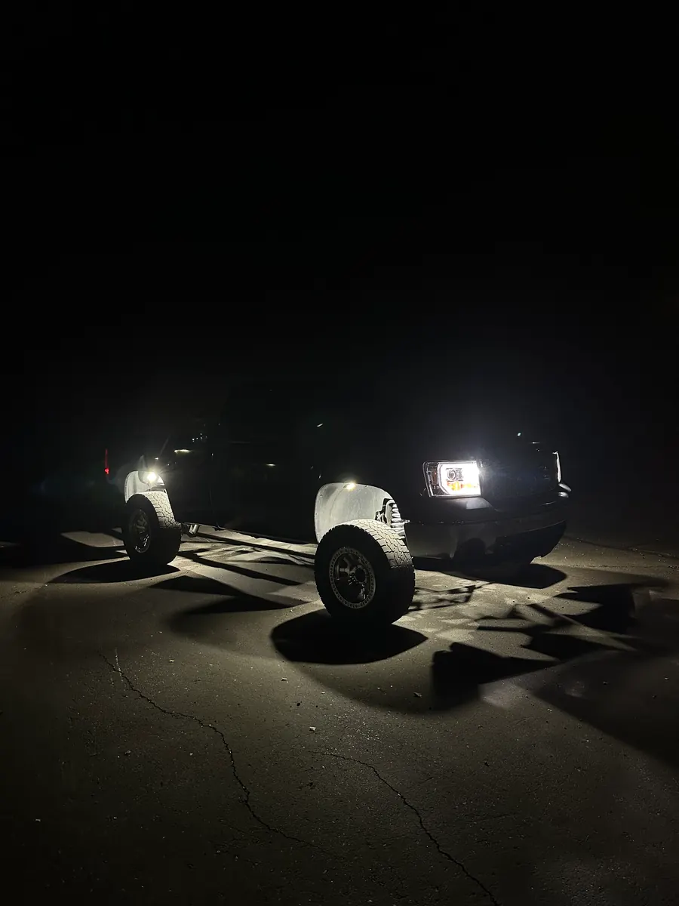

Rock Light Installation · Mesa, AZ
Rock Light Installation At Our Mesa Shop
Rock lights are simple until you're under the truck routing wire past the exhaust. We install them at our Mesa shop, our kit or yours, and you pick it up with every light tested in front of you.
5.0★ from 33 reviews · installed in Mesa · kits ship anywhere
- Booking
- Free, about a minute
- Drop-Off
- Mon to Sat, 9 to 4:30
- Your Lights
- Welcome

What Goes Into A Rock Light Install
Mounting the lights is the quick part. The work is in everything that connects them.
- Planning the layout
- Where each light goes, which way it points, and how the wire gets from each light back to the controller without crossing heat or moving parts.
- Mounting
- Bolted to the frame or held on with magnetic mounts, depending on the truck and the light.
- Routing the wire
- Along the frame, clear of the exhaust, the suspension travel and the driveshaft, and tied down so it can't sag or rub through.
- Power and protection
- A fused circuit back to the power source, so a short can't take out the wiring.
- Sealing
- Every connection heat-sealed so water and dust stay out.
- Testing
- Every light on, every mode checked, with you, before you leave.
Wiring It Yourself Vs Having Us Do It
Plenty of our customers wire their own. Our plug and play kits (RGBW, switchback and wheel lights) come with the module, remote and app, so most of the job is mounting and running the cable. Our 72 and 84-chip packs are DIY wiring, with about 11 inches of wire on each light that you join together and run to power.
If you go DIY, the rules that keep a rock light setup working for years are the ones that are easy to skip. Put a fuse close to the power source. Seal every splice. Keep wire away from the exhaust and anything that moves when the suspension works. Skipping any one of those three is how a rock light setup fails early.
If you'd rather skip all of it, book the install. We'll quote it before we start.
Already Have Lights? We Install Those Too
You don't need to buy your lights from us. Pick Bringing My Own when you book and tell us what you have. We install other brands the same way we install ours, with the same fused circuits and sealed connections.
If you're buying new, our kits are on the rock lights page, and you can book the install in the same visit.
What Rock Light Installation Costs
There are two parts to the price: the lights and the labor. Our lights start at $45 for a pack of four, and the kits run from $200 for a 4-light switchback kit to $920 for a 24-light 219-chip kit.
Labor depends on your vehicle and how many lights you want, so we quote it when we confirm your booking, before any work starts. You'll know the full price before you drop the truck off.
How Long Rock Light Installation Takes
It depends on the count and the vehicle. Eight lights in the wheel wells is a much shorter job than thirty lights bumper to bumper. When we text to confirm your drop-off, we'll tell you when to expect it back.
Wired Right On Every Install
Every light we put on a vehicle gets the same four things. None of them are extras, and none of them depend on who's working that day.
- Fused, every circuit
- Each circuit gets its own fuse, so a short pops a fuse instead of cooking the wiring or the light.
- Heat-sealed connections
- Every splice is sealed against Arizona heat, monsoon water and the pressure washer.
- Your lights or ours
- Bring a kit you bought from us or one you bought somewhere else, or we supply the lights.
- Tested before you leave
- We turn on every light with you at pickup, so you see it working before you drive away.
How An Install Works At Our Mesa Shop
- Book a drop-offPick the work, your vehicle and a drop-off day and time. Booking is free and takes about a minute.
- We text you to confirmYou get the slot and your install quote by text before anything is done. Labor depends on your vehicle and how many lights you want.
- Drop it off in MesaDrop-off is by appointment, Monday to Saturday, 9 to 4:30. The address comes with your confirmation.
- Pick it up litWe walk you through every light and the controls, then you drive home with it.
Wiring Fixes For Lights You Already Have
One light out, a whole side dead, lights that flicker: book a Wiring Fix, tell us what's going on, and we'll track it down.
Builds From Our Customers
Installation Questions
Do you install rock lights I bought somewhere else?
Yes. Pick Bringing My Own when you book and tell us what you have.
How much does rock light installation cost?
Labor depends on your vehicle and the number of lights. We quote it when we confirm your booking, before any work starts. Lights start at $45 for a pack of four.
How long does it take to install rock lights?
It depends on how many lights and the vehicle. We'll tell you when to expect it back when we confirm your drop-off.
How do you wire rock lights to a switch?
Our plug and play kits run from a module with a remote and a Bluetooth app, so there's no separate switch. Our DIY packs need a fused circuit and a switch. We wire both.
Do I need to drill holes in my truck?
Not always. Our magnetic mounts hold the 72 and 84-chip lights without drilling. Some spots still call for a bolt, and we'll tell you before we do it.
Where is the shop?
In Mesa. Drop-off is by appointment, Monday to Saturday, 9 to 4:30, and the address comes with your confirmation.